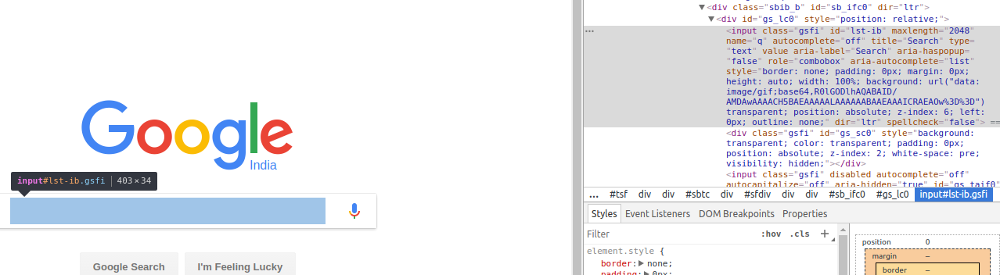

Trainer Anuj Seth
Hello Selenium
The "hello world" for selenium is searching something on google
Let's look at a script to do just that
Hello Selenium
Hello Selenium
Why q ?

Hello Selenium
Hello Selenium
Why Python ?
Easy to learn, yet powerful high level language
Fast and efficient data structures
Supports imperative, object oriented and functional styles of programming
Runs on windows, mac and linux and has ports to the JVM and the .NET VM
It's fun
Python Interactive Interpreter
You can run any valid Python code on the interactive shell
Use it for exploratory programming
>>> print("Hello World")
Hello World
>>> 1 + 2 + (100 / 25)
7
>>> def hello():
... print("Hello World")
...
>>> hello()
Hello World
>>> x = 'Hello World'
>>> print(x)
Hello World
>>> x
Hello World
# and if you have an internet connection then type
>>> import antigravity

https://xkcd.com/353/
Executing scripts
On the command line
anuj@serenity:~/python_training$ python hello.py
Hello world
Or if you are on linux and you use the shebang (#!) line
anuj@serenity:~/python_training/code$ chmod +x ./hello.py
anuj@serenity:~/python_training/code$ ./hello.py
Hello world
The importance of being indented
Most programming languages use certain characters or keywords to form groups of statements
- { ... }
- begin .... end
- do .... done
Python uses indentation to form code blocks
In Python indentation is not just a good practise but a requirement
>>> if 1:
... print("Hello")
...
Hello
# try this without the indentation and see what happens
# you can continue a statment on the next line with "\"
>>> if 1:
... 1 and \
... 2
...
2
Data Types and Variables
Variables in Python have a type associated with them, though you need not explicitly specify it
Variables can change their value as well as their type during their lifetime
But remember Python will not do automatic type conversion like some other languages
Variables
>>> i = 42
>>> type(i)
<type 'int'>
>>> i + '3'
Traceback (most recent call last):
File "<stdin>", line 1, in <module>
TypeError: unsupported operand type(s) for +: 'int' and 'str'
>>> i = "hello"
>>> type(i)
<type 'str'>
Variables
# in python variables are references to objects
>>> x = 42
>>> y = x
>>> print(x, y)
(42, 42)
# but are they the same object ?
>>> print(id(x), id(y))
(31434048, 31434048)
# what do you think happens when I do this ?
# does x change too ?
>>> y = 43
Operators
| +, - | Addition, Subtraction |
| *, /, % | Multiplication, Division, Modulo |
| or, and, not | Boolean operators |
| ** | exponentiation |
| in | element of |
| <, >, >=, <=, ==, != | the usual comparison operators |
Data Types
- Numbers
- Sequential Data Types
- Strings
Numbers
# integers
>>> 42
42
# floats
>>> 42.0
42.0
# long numbers, which have unlimited precision
>>> a = 420000000000000000000000000000000000000L
>>> a + 1
420000000000000000000000000000000000001L
Numbers
# imaginary numbers
>>> x = 4 + 5j
>>> y = 5 + 6j
>>> x + y
(9+11j)
# hexadecimal
>>> 0xaf
175
# octal
>>> 0o10
8
Numbers
Strings
# strings in python can be double quoted
>>> "Guido van Rossum is the creator of Python"
# single quoted
>>> 'Python is named after Monty Python'
# triple quoted with " or ', which can span across lines
>>> """Hello multi-line
... world"""
'Hello multi-line\nworld'
# triple quoted strings can contain embedded quotes
# try it
# note: there is no character data type in python
Strings
# strings can be concatenated with +
>>> "hello" + "world"
'helloworld'
>>> "hello" + ' ' + "world"
'hello world'
# if you multiply a string with a number you get repetition
>>> 'hello' * 2 + ' world'
'hellohello world'
# you can get the length of a string using len()
>>> len("hello")
5
Strings
# let's test our knowledge of strings
# open the file test_strings.py
# and make all the test cases pass
String Manipulation
# strings in python are sequences of characters
>>> s = "a string"
>>> s[0]
'a'
# but remember that they are immutable
# try doing this
# s[1] = 'a'
# if you want elements from the end of the list
# you can use negative indices
>>> s[-1]
'g'
String Manipulation
# you can also get a 'slice' of the elements in a list
>>> s[0:4]
'a st'
# negative indices also work with slices
>>> s[-3:-1]
'in'
# what happens if you omit one or both of the start/stop ?
# s[:]
# does anyone wants to guess what is happening here ?
>>> s[1::2]
' tig'
# as we have seen we use 3 numbers to define the slice
# start, stop and step
String Formatting
# if you want to format strings for printing
# or storing, python provides powerful methods
# the old style looks like this
>>> 'A string: %s, a number:%d' %('one', 2)
'A string: one, a number:2'
# the new style looks like this
>>> 'A string: {0}, a number:{1}'.format('one', 2)
'A string: one, a number:2'
# we will study the new style as in my opinion it is cleaner
# and more powerful
String Formatting
# strings can be padded and aligned left like this
>>> "{0:10}".format('test')
'test '
# strings can be padded and aligned right like this
>>> "{0:>10}".format('test')
' test'
# the pad character can be given like this
>>> "{0:*>10}".format('test')
'******test'
# and we can center a string like this
>>> "{0:^10}".format('test')
' test '
# your turn, pad "zip" with _ to 6 characters
String Formatting
# strings can be truncated using precision
>>> "{0:.2}".format('test')
'te'
# your turn, try to truncate the string "Mighty Mouse" to 6
# and pad to 10
# hint:fill and align are inseperable
String Formatting
# we can also print numbers
>>> "{0:d}".format(42)
'42'
# pad and align them
>>> "{0:5d}".format(42)
' 42'
>>> "{0:<5d}".format(42)
'42 '
# specify precision for floats
>>> "{:06.2f}".format(3.141592653589793)
'003.14'
# and use named placeholders
>>> "{first} {last}".format(first="Hello", last="World!")
"Hello World!"
String Manipulation
# let's test our knowledge of string manipulation
# open the file test_string_manipulation.py
# and make all the test cases pass.
# you will encounter some string functions
# that you have not seen before.
# when in doubt use help() or raise your hand
Control Flow Statements
- Conditional Statements
- For Loops
- While Loops
Conditional Statements
Conditional Statements - truthiness
Everything except the following is considered true in python
- numeric zero (0, 0L, 0.0)
- boolean False
- empty strings/lists/tuples/dictionaries
- the special value None
While loop
While loop - continue
For loop
For loop
Data Types - Continued
- Sequential Data Types
- Lists
- Tuples
Lists
# lists are a versatile data type defined like this
>>> data_types = ["numbers", "strings", "lists", "dictionaries"]
# you can access the elements using indices
>>> data_types[2]
'lists'
# do you think array slicing, as we saw for strings,
# will also work for lists ?
# try extracting the last element of this list.
# how about elements from 2nd through 4th positions ?
Lists
# lists can contain elements of different types
test_centuries = ["Tendulkar", 51, "Dravid", 36]
# and even other lists
test_odi_centuries = ["Tendulkar", [51, 49], "Dravid", [36, 12]]
# try extracting the ODI centuries scored by Dravid
# you can check for membership in a list using the in operator
>>> 1 in range(10)
True
>>> 1 in range(2, 10)
False
List Assignments
Detour - Slicing In Depth
# slices are defined as [a:b:c] where
# len = length of string, tuple or list
# c - default = +1. Absolute value indicates steps,
# positive is forward, negative is backward.
# a - default = 0, when c is positive or blank.
default = -1, when c is negative.
# b - default = len, when c is positive or blank.
# default = -(len + 1), when c is negative.
>>> l = [2, 3, 4]
>>> l[:-4:-1]
[4, 3, 2]
# can you guess what this returns ?
>>> l[-1:5:1]
Detour - Slicing In Depth
# and this ?
>>> l[-5:1]
# indices out of bounds, also called degenerate indices,
# are handled gracefully during slicing
>>> l[-100:]
[2, 3, 4]
# the same will not hold for normal list access
>>> l[-100]
Lists
# open the file test_lists.py
# and make all the test cases pass.
Tuples
# tuples are immutable lists, defined like this
>>> t = (-5, 'a', 'c')
# you can access elements like this
>>> t[1]
'a'
# try doing this
>>> t[0] = 'this will give an exception'
# but why tuples if they are almost like lists ?
# they are faster than lists
# they can be used as keys in dictionaries
Tuples
# open the file test_tuples.py
# and make all the test cases pass.
# note that you can check the type of an object like this
>>> type([1,2,3])
<type 'list'>
>>> type([1,2,3]) == list
True
Data Types
- Dictionaries
- Sets
Dictionaries
# dictionaries are associative containers or
# unordered key-value pairs
>>> x = {'a':1}
>>> x['a']
1
# let's create a mapping from programming languages
# to their creators
>>> lang_creators = {'c++':'Bjarne Stroustrup',
... 'ruby':'Yukihiro Matsumoto'}
# can you extract the name of the creator of c++ ?
Dictionaries
# this mapping is missing our favorite language,
# let's fix that
>>> lang_creators['python'] = 'Guido van Rossum'
>>> lang_creators
{'python': 'Guido van Rossum', 'ruby': 'Yukihiro Matsumoto', 'c++': 'Bjarne Stroustrup'}
# what happens if you try to extract a key that does
# not exist in this dictionary ?
# e.g. java
# you can use the get method on dictionaries to
# return None or a default value if a key does not exist
>>> x = lang_creators.get('java')
>>> x = lang_creators.get('java', 'not known')
# note that get does not add the key to the dict
Dictionaries
# we can check for the existence of a key using 'in'
>>> 'java' in lang_creators
False
>>> 'python' not in lang_creators
False
# we can delete a key and the associated value
>>> del lang_creators['c++']
# what do you think the len() function will return ?
>>> len(lang_creators)
Dictionaries
# dictionaries can have different types as keys or values
>>> d = {'a string':['a', 'string'], 1:10,
... ('a', 'tuple'):'a tuple'}
# the only restriction is that mutable types cannot be keys
# hence you cannot have lists or dictionaries as keys.
# there is no restriction on the values stored.
# try to create a dictionary mapping letters a,b,c to their
# positions in the alphabet and vice-versa
Dictionaries
# you can iterate over the keys of a dictionary like this
>>> d = {'a string':['a', 'string'], 1:10,
... ('a', 'tuple'):'a tuple'}
>>> for k in d:
... print(k)
# you can also use the iterkeys method to get the same result.
# and use the itervalues method to iterate over only the values
# stored in a dictionary
# but this the most common iteration pattern
>>> for k,v in d.iteritems():
... print(k,v)
Dictionaries
# open the file test_dictionaries.py
# and make all the test cases pass.
Sets
# a set contains an unordered, unique collection of
# immutable objects
# the set constructor takes an iterable
>>> x = set("hello world")
>>> x
set([' ', 'e', 'd', 'h', 'l', 'o', 'r', 'w'])
>>> x = set([1, 2, 3, 1])
>>> x
set([1, 2, 3])
# you can add elements to a set using the add method
>>> x.add(5)
# sets cannot contain mutable objects like lists
>>> x = set([1, 2, 3, 1, ['a', 'b']])
Sets
# there is another variety of a set called the frozenset
# which does not allow change
>>> x = frozenset("hello world")
>>> x
frozenset([' ', 'e', 'd', 'h', 'l', 'o', 'r', 'w'])
# try adding an element to this frozen set x
Sets
# let's look at some interesting methods of sets
>>> x = {"a","b","c","d","e"}
>>> y = {"b","c"}
>>> x.difference(y)
set(['a', 'e', 'd'])
>>> x - y
set(['a', 'e', 'd'])
>>> x.intersection(y)
set(['c', 'b'])
>>> y.issubset(x)
True
>>> x.union(y)
set(['a', 'c', 'b', 'e', 'd'])
Sets
# open the file test_sets.py
# and make all the test cases pass.
Zip and List Comprehensions - A necessary detour
# we are often confronted with a situation where we have
# two lists that we want to iterate over simultaneously.
# let's say we want to create a mapping for all the letters
# of the alphabet to their positions i.e. {'a':1, 'b':2, .....}
# i can get all the letters like this
for c in range(97, 123):
print(chr(c))
# and i can get the positions using range again.
# so let's see how we can combine these
out_list = []
for c, pos in zip(range(97, 123), range(1, 27)):
out_list.append((chr(c), pos,))
alphabet_mapping = dict(out_list)
Zip and List Comprehensions - A necessary detour
# list comprehensions are the pythonic way to apply
# transformations to the objects in a list
>>> l = range(5)
>>> [x * 2 for x in l]
[0, 2, 4, 6, 8]
>>> [x for x in l if (x % 3) == 0]
[0, 3]
# your turn
# use list comprehension to create the alphabet to position
# mapping from our previous example
Zip and List Comprehensions - A necessary detour
# here is one way of doing that
dict([(chr(c), pos) for c, pos in zip(range(97, 123),
range(1, 27))])
# and another using dictionary comprehension
{chr(c):pos for c, pos in zip(range(97, 123), range(1, 27))}
# and we can also take the help of the standard string module
import string
{c:pos for c,pos in zip(string.ascii_lowercase, range(1, 27))}
# python also has set comprehension which you will encounter
# in a minute
Zip and List Comprehensions - A necessary detour
# let's make some test cases pass
# open the file test_comprehension.py
# and get started
Functions
- Functions are the most basic way of code reuse in most languages
- You have already used built-in functions like len() or dict()
- Let's see how you can define your own
Functions
# this is a simple function
>>> def add(a, b):
... return a + b
...
>>> add(5, 4)
9
# you can put this function in a file and
# execfile() it on the interpreter prompt
Functions
# this is the same function with an optional parameter
>>> def add(a, b=5):
... return a + b
...
>>> add(5)
10
# and this is a function with arbitrary number of parameters
# all the arguments after the required ones are put into a tuple
>>> def add(a, b, *more):
... return a + b + sum(more)
...
>>> add(1, 2, 3, 4)
10
# can you guess what happens if we call add with just 2 args ?
Functions
# open the file test_line_parser.py and
# complete the line_parser function.
# this function takes 3 arguments - a list, a string
# and a delimiter.
# the function splits the string using the delimiter
# and returns a dictionary with keys from the first arg
# and corresponding positional values from the split string
Recursive Functions
# some problems tend to have very straightforward recursive
# solutions.
# recursive solutions of factorial or fibonacii are standard
# learning exercises.
def factorial(n):
if n == 1:
return 1
else:
return n * factorial(n-1)
Recursive Functions
# your turn
# open the file test_fibonacci.py and fill in the body of the
# fib() function.
# this function generates the nth fibonacci number.
# to refresh your memory
# F(0) = 0,
# F(1) = 1,
# F(n) = F(n-1) + F(n-2)
Recursive Functions
Memoization
# did you try to compute the 40th fibonacci number ?
# memoization is a technique where we store the results
# of expensive computations to reuse.
# let's try to make our fibonacci faster using memoization
Namespaces and Modules
- Scope
- Global and local variables
- Modules
Scope
# scope define the visibility of identifiers like
# variables or functions.
# for example functions limit the visibility of variables defined
# inside them
>>> def a_function():
... s = 'i am only defined here'
...
>>> print(s)
NameError: name 's' is not defined
>>> def a_function():
... print(s)
...
>>> s = 'hello world'
>>> a_function()
hello world
Scope
# can you guess what will print when we call this function ?
>>> def a_function():
... s = 'i am only defined here'
... print(s)
>>> s = 'hello world'
>>> a_function()
# you can deliberately access identifiers in higher scope
>>> def a_function():
... global s
... s = 'changed'
>>> s
'hello world'
>>> a_function()
>>> s
'changed'
Namespaces
# so what is a namespace ?
# local names in a function
# global names in a module
# the built-in names e.g. len, abs
# and this is also the order in which python tries to
# resolve names.
# practically namespace and scope are interchangeable used
Modules
# what is the need for modules ?
# why don't i just write all my code in one file ?
# modules are nothing but common python code files.
# create a file called hello.py with just one function
def hello():
print("hello world")
# create a second file main.py
import hello
hello.hello()
# you can avoid the namespace qualifier like this
from hello import hello
hello()
Modules
Modules
# how does python find modules ?
# the following locations are searched
# directory of the top-level file, i.e. the file being executed.
# directories of PYTHONPATH, an environment variable.
# installation path in Linux/Unix e.g. in /usr/lib/python2.7
# you can find out the search directories like this
>>> import sys
>>> sys.path
Regular Expressions
Some people, when confronted with a problem, think “I know, I'll use regular expressions.”
Now they have two problems.
- Jamie Zawinski
Regular Expressions
# regular expression allow you to specify a pattern to
# be matched against a string
# to return just the first match
import re
m = re.search("fox", "the quick brown fox")
if m is not None:
print(m.group(0))
# to get all the matches or an empty list
m = re.findall(".?o.?", "the quick brown fox")
if m:
print(m)
# be careful, regexes can be greedy
m = re.findall(".*fox.*", "the quick brown fox")
Regular Expressions
# if you want to match the start or end of a string
# use ^ or $
m = re.findall("fox$", "fox the quick brown fox")
# regexes also support character classes
m = re.findall("[a-z][nu]{2}[a-z]", "anuj aunt anti rally")
match_landline = re.findall("^0[-0-9]*$", "020-415322")
match_landline = re.findall("^0[-0-9]*$", "9978665479")
# and if you want to match one of the special characters like dot
postfix_txt = re.search(".txt$", "application_log.txt")
postfix_txt = re.search(".txt$", "application_logtxt")
postfix_txt = re.search("\.txt$", "application_log.txt")
Regular Expressions
# can you write a regex to validate an IP address ?
# how about an email address ?
File Handling
- Reading and writing files in python is similar to other languages
- Only easier
File Handling
File Handling
# you can open a file for writing
fobj = open("an_output.file", "w")
fobj.write("hello file world")
fobj.close()
# note that opening a file for writing that already exists
# wipes that file
# use append mode, 'a'
File Handling
# you can read all the lines of a file in one go
fobj = open("an_output.file", "r")
all_the_lines = fobj.readlines()
fobj.close()
# is there any scenario when you would not want to do this ?
File Handling
# your turn
# write a program to read the /var/log/syslog file
# and print how many times each type of event
# was logged.
Sep 25 09:43:30 serenity anacron[784]: xxxxxxxxxxxxxx
# the 5th field is the event type.
# you need to remove the trailing [..] and :
# note: read the documentation for re.sub
File Handling
Exceptions
- Exception handling in python uses try/catch blocks
- It is very similar to other languages like Java
Exceptions
# let's take an example
>>> int(raw_input("Please enter an integer:"))
Please enter an integer:hello
...
ValueError: invalid literal for int() with base 10: 'hello'
# let's fix that
while True:
try:
n = raw_input("Please enter an integer: ")
n = int(n)
break
except ValueError:
print("No valid integer! Please try again ...")
print "Great, you successfully entered an integer!"
Exceptions
Object Oriented Programming
- Python does not force you to do OOP unlike languages like Java
- You can write powerful programs without ever creating a class - it's a matter of choice
- And you have been using objects all this time
- string.format
- file.read
- dict.keys
Object Oriented Programming
- In Python objects store data in variables called fields
- Functions defined in a class are called methods, to differentiate them from standalone functions
- Class methods differ from functions in a one way - the self argument
OOP
# let's say we are a manufacturer of robots.
# we have 2 types of robots - 2 wheeled, 4 wheeled
>>> class Robot(object):
... pass
>>> r = Robot()
OOP
# if you put the code in a file calles robots.py
>>> import robots
>>> r = robots.Robot('4-wheeled')
OOP
# now our company came out with a walking robot
OOP
# since the walking robots consume more power
# battery level below 60 is considered low
OOP
>>> import robots
>>> r = robots.Robot('2-wheeled')
>>> r.charge_battery(41)
>>> r.is_battery_low()
False
>>> b = robots.BiPedal()
>>> b.charge_battery(41)
>>> b.is_battery_low()
True
Generators
- Functions that produce a sequence of values for use in iteration
- They use the yield keyword to create generator objects
- Python automagically creates the __iter__() and next() methods for your generators
A Simple Generator
def my_gen():
yield 'a'
yield 'b'
>>> x = my_gen()
# note that x is a generator object
>>> x
<generator object my_gen at 0x7f5f9f6bdd20>
# it will only start producing values when we call next on it
>>> x.next()
'a'
>>> x.next()
'b'
>>> x.next()
Traceback (most recent call last):
File "<stdin>", line 1, in <module>
StopIteration
Another Generator
# let's write a generator version of range
def my_range(n):
i = 0
while i < n:
yield i
i += 1
return
>>> for n in my_range(5): print n
...
0
1
2
3
4
Generator Expressions
# generator expression look like comprehensions
# but you have to iterate over them to realize values
>>> a_list = range(10)
>>> x = (x for x in a_list if x > 3)
>>> len(x)
....
TypeError: object of type 'generator' has no len()
>>> x
at 0x7f4789d988c0>
>>> x.next()
4
Generators
# write a generator called sum_it which
# returns a running total of an input list
>>> for i in sum_it(range(2,5)):
... print(i)
...
2
5
9
Generators
def sum_it(seq):
value = 0
for num in seq:
# The local state of 'value' will be retained
# between iterations
value += num
yield value
Why Use Generators ?
Generators do not hold or realize all the data in memory
In some cases this makes generators faster
$ python -m timeit "for i in xrange(1000000):" " pass"
100 loops, best of 3: 14 msec per loop
$ python -m timeit 'for i in range(1000000):' ' pass'
10 loops, best of 3: 33.2 msec per loop
The main reason for using generators is memory efficiency which allows us to
- Work with huge lists
- Design efficient solutions to some complex problems
Tower Of Hanoi

T(0) = 0
T(n) = 2.T(n-1) + 1
recursive solution anyone ?
does it work for 1000 ?
def hanoi():
yield 0
last = 0
while True:
current = (2 * last) + 1
yield current
last = current
moves = [x for x in zip(hanoi(), xrange(1000 + 1))][-1][0]
# homework: use itertools.izip instead of zip
# is there any difference ?
The Zen of Python
- The guiding principles for your and Python's design
- Distilled by Tim Peters into 20 aphorisms* only 19 of which have been written down
* a terse saying embodying a general truth
1. Beautiful is better than ugly
Logical operators - Use of and, or instead of &&, || respectively.
Though it is subjective, code seems more readable and beautiful this way.
if (is_valid(a) && b == 0 || s == 'yes') {
if is_valid(a) and b == 0 or s == 'yes':
Euclid's Algorithm to find the greatest common divisor in 4 lines:
def gcd(x, y):
while y:
x, y = y, x % y
return x
The Python solution captures the beauty of the algorithm, while being concise, explicit and elegant at the same time.
2. Explicit is better than implicit.
Every time you invoke a function you should name its module explicitly
import os
print os.getcwd()
instead of this
from os import *
print getcwd()
While Python is dynamically-typed, it is also strongly-typed. Several scripting languages allow things like this
[$]> php test.php
15
This is known as type coercion.
In Python, multiplying a string by an integer will print the string that many times
>>> foo = "5"
>>> foo * 3
'555'
Adding them, however, produces an exception
If you really want to add a string and integer, then you need to be explicit
>>> int(foo)+3
8
3. Simple is better than complex
6. Sparse is better than dense.
if i>0: return sqrt(i)
elif i==0: return 0
else: return 1j * sqrt(-i)
versus
if i > 0:
return sqrt(i)
elif i == 0:
return 0
else:
return 1j * sqrt(-i)
To rephrase, "Don't try to stick too much code on one line."
7. Readability Counts.
Compare C and Python
#include <stdio.h>
int main(void)
{
printf("Hello, world!\n");
return(0);
}
print "Hello world!"
And what about indentation?
Indented code is more readable. Thus, in Python it's mandatory.
10. Errors should never pass silently.
Never do this
try:
import this
except ImportError:
pass
11. Unless explicitly silenced.
try:
v = d[k]
except KeyError:
v = d[k] = default
12. In the face of ambiguity, refuse the temptation to guess.
if not a and b:
do something
What binds more tightly 'not' or 'and'?
The syntax is unambiguous but my memory is not.
Use parentheses to make your intent clear
if not (a and b):
do something
13. There should be one-- and preferably only one --obvious way to do it.
This is the exact opposite Perl Programming Language's motto - there's more than one way to do it
There should be one module for every need
How many ways could you provide to "iterate over a sequence" in C++ ?
- Iterating over an array with integers or pointers
- iterating over STL vectors with various kinds of iterators
In Python there's only one way
for element in sequence:
14. Although that way may not be obvious at first unless you're Dutch.
The classic ternary operator (a = cond?expr1:expr2 in C) was debated hotly in the community.
Guido came up with this
a = expr1 if cond else expr2
This is one way to do this, and it isn't obvious at first.
Python is an experiment in how much freedom programmers need.
Too much freedom and nobody can read another's code;
too little and expressiveness is endangered.
- Guido van Rossum